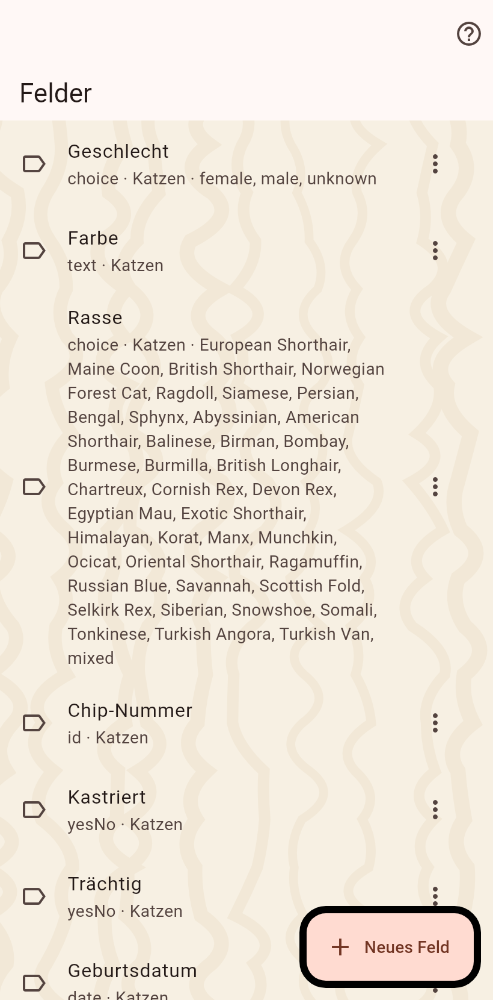

Die Felder, die dein Katalog benutzt, eine Liste für Katzen und Zuhause. Benenne sie um, ändere die Optionen eines Auswahlfeldes oder leg eigene an.

Text, Ja oder Nein, ein Datum, das auch nur ein Monat oder ein Jahr sein darf, eine Zahl, ein Messwert mit Dimension und Einheit, eine Auswahl mit deinen Optionen, ein Ort, eine ID, ein Verweis auf eine andere Katze, und Schlagwörter. Ein ID-Feld kann auf ein Register zeigen, dann öffnet die Nummer an der Katze das Register im Browser.
Auf der Seite einer Katze oder Kolonie beim Bearbeiten, ganz unten: "Neues Feld". Hier, in den Einstellungen des Katalogs, wird die ganze Liste verwaltet. Felder gehören zum Katalog: jedes Gerät, das ihn abgleicht, sieht dieselben.
Ein Wert wird in seinem Editor als privat markiert. Er bleibt auf diesem Gerät und verlässt es nur, wenn ein Teilen den Privat-Schalter an hat; ein Partner sieht ein Schloss auf der leeren Zeile. Privat betrifft einen Wert, nie ob eine Katze existiert.
Jedes Starterfeld mit seinem Typ steht im Felderverzeichnis.